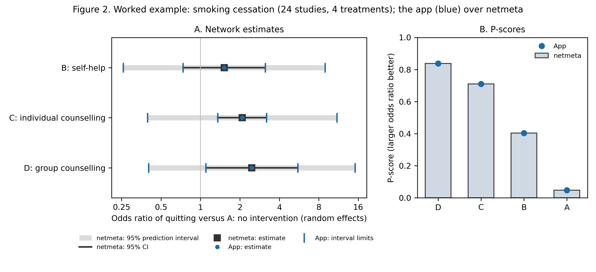
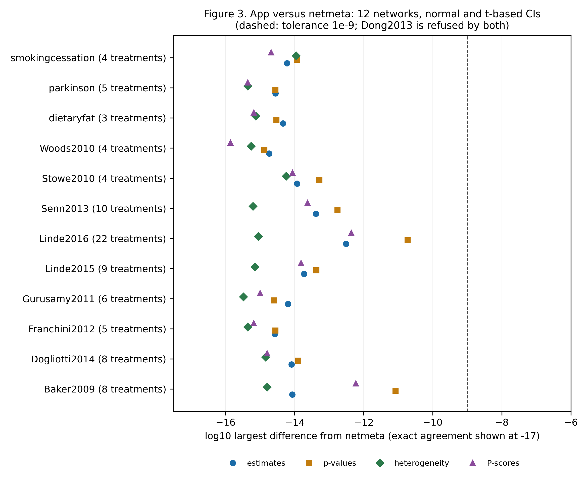
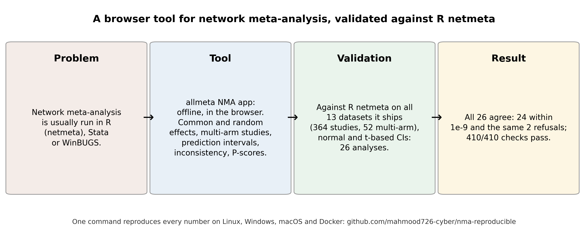

All runs · Repository · Live app
NMA app: validation against netmeta: latest verified full run
Run 37339317691 on commit 03ded31, published 2026-10-05 16:21 UTC. Full validation: every number in the paper.
| Platform | Result |
|---|---|
| Docker (canonical) | 48/48 numbers reproduced |
| Linux | 48/48 numbers reproduced |
| Windows | 48/48 numbers reproduced |
| macOS | 48/48 numbers reproduced |
| Cross-platform comparison (corpus and engine output bit-identical on the strict platforms) | failure |
Every checked number (canonical run: full-docker)
| Quantity | Expected | Reproduced | Result |
|---|---|---|---|
| datasets | 13 | 13 | PASS |
| studies_total | 364 | 364 | PASS |
| contrasts_total | 506 | 506 | PASS |
| multiarm_total | 52 | 52 | PASS |
| datasets_with_multiarm | 13 | 13 | PASS |
| analyses | 26 | 26 | PASS |
| netmeta_fitted | 24 | 24 | PASS |
| netmeta_refused | 2 | 2 | PASS |
| refusals_matched | 2 | 2 | PASS |
| app_refused_netmeta_fitted | 0 | 0 | PASS |
| app_fitted_netmeta_refused | 0 | 0 | PASS |
| within_tolerance | 26 | 26 | PASS |
| all_within_tolerance | 1 | 1 | PASS |
| checks_total | 410 | 410 | PASS |
| checks_passed | 410 | 410 | PASS |
| all_below_1e-10 | 1 | 1 | PASS |
| estimates_below_1e-12 | 1 | 1 | PASS |
| treatments_min | 3 | 3 | PASS |
| treatments_max | 22 | 22 | PASS |
| ex_studies | 24 | 24 | PASS |
| ex_multiarm | 2 | 2 | PASS |
| ex_n | 4 | 4 | PASS |
| ex_tau2 | 0.6 | 0.5989 | PASS |
| ex_I2 | 88.6 | 88.649 | PASS |
| ex_I2_lo | 84.4 | 84.403 | PASS |
| ex_I2_hi | 91.7 | 91.738 | PASS |
| ex_Q | 202.6 | 202.619 | PASS |
| ex_df | 23 | 23 | PASS |
| ex_Qwithin | 187.4 | 187.399 | PASS |
| ex_dfwithin | 16 | 16 | PASS |
| ex_Qbetween | 15.2 | 15.22 | PASS |
| ex_dfbetween | 7 | 7 | PASS |
| ex_pbetween | 0.03 | 0.0333 | PASS |
| ex_or_D | 2.47 | 2.4653 | PASS |
| ex_or_D_lo | 1.1 | 1.1003 | PASS |
| ex_or_D_hi | 5.52 | 5.5234 | PASS |
| ex_or_D_pi_lo | 0.4 | 0.4022 | PASS |
| ex_or_D_pi_hi | 15.11 | 15.1123 | PASS |
| ex_or_C | 2.08 | 2.0822 | PASS |
| ex_or_C_lo | 1.36 | 1.3557 | PASS |
| ex_or_C_hi | 3.2 | 3.1979 | PASS |
| ex_or_B | 1.52 | 1.5162 | PASS |
| ex_or_B_lo | 0.74 | 0.737 | PASS |
| ex_or_B_hi | 3.12 | 3.1196 | PASS |
| ex_best | D | D | PASS |
| ex_best_pscore | 0.84 | 0.8376 | PASS |
| ex_pscore_A | 0.05 | 0.0479 | PASS |
| ex_netmeta_or_D | 2.47 | 2.4653 | PASS |
Also as reproduction_report.md and stats.json; every run's full outputs are artefacts of the run.
Figures from this run


